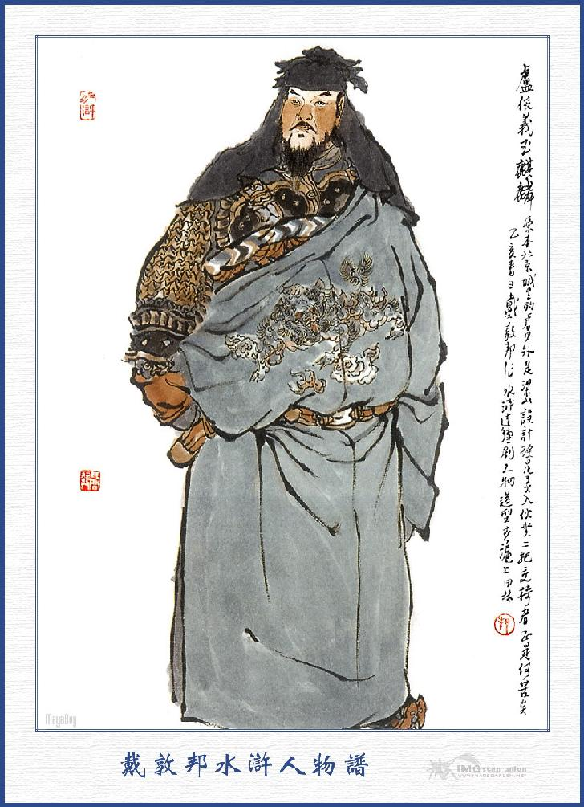
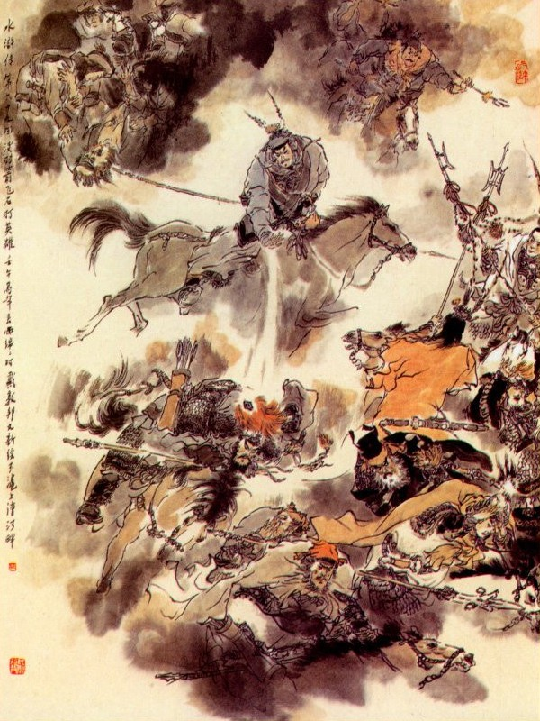
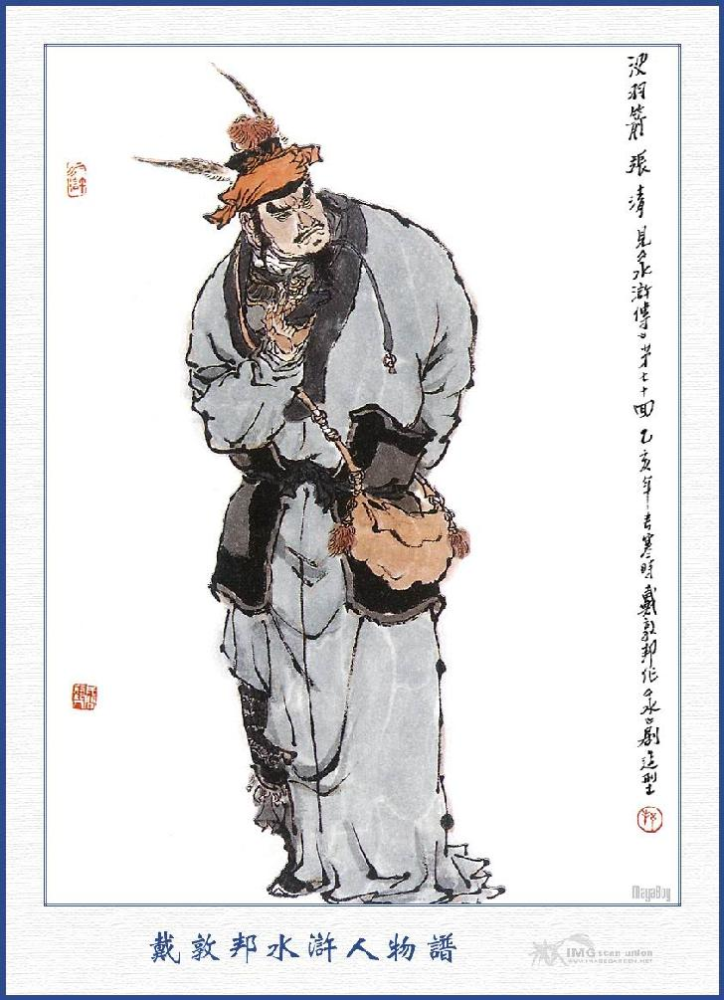
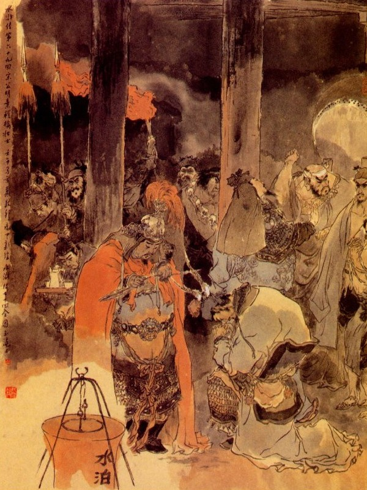

Khi đó Tống Giang toan kéo quân về Lương Sơn Bạc, bỗng thấy Bạch Thắng về báo rằng:
- Lư Tuấn Nghĩa đánh thành Đông Xương bị thua luôn hai trận. Trong thành có một tên mãnh tướng, tên là Trương Thanh, quê ở phủ Chương Đức, vốn tay kị hổ xuất thân, tài nghề ném đá đánh người, trăm viên đều trúng, người ta thường gọi là Một Vũ Tiễn xưa nay, Thủ hạ hắn ta có hai viên phó tướng, một người tên là Hoa Hạng Hổ Cung Vượng, toàn thân chạm nốt hổ, trên cổ chạm đầu hổ, tài nghề phóng thương trên mình ngựa; Và một người tên là Trúng Tên Hổ Đinh Đắc Tôn, từ mặt xuống cổ đều lỗ chỗ những sẹo, phóng cây thoa trên mình ngựa rất giỏi. Khi Lư Viên Ngoại dẫn quân đến rồi mười ngày trời không chịu ra đánh, mãi đến hôm vừa rồi, Trương Thanh mới ra thành đánh nhau, bên này Hắc Tư Văn nghênh địch, bất đồ đánh được mấy hiệp thì Trương Thanh vờ chạy, cho Hắc Tư Văn đuổi theo. Sau Trương Thanh quay lại ném một viên đá, trúng ngay vào trán Hắc Tư Văn ngã lăn xuống ngựa. Bấy giờ may có Yến Thanh bắn một mũi tên trúng vào con ngựa củ Trương Thanh, nên mới cứu được Hắc Tư Văn về trận. Đến hôm sau Phàn Thụy dẫn Hạng Sung, Lý Cổn ra đánh nhau, không dè Hạng Sung bị Đinh Đắc Tôn phóng cây thoa vào nách, lại phải thua chạy. Hiện nay hai người vẫn còn dưỡng bệnh ở trong thuyền. Bởi vậy quân sư cho Tiểu đệ mời Ca Ca đến cứu ứng ngay cho.
Tống Giang nghe nói, than với mọi người rằng:
- Lư Viên Ngoại thực là vô duyên quá, ta để cho Ngô Dụng, Công Tôn Thắng ở đó cũng tưởng rằng đến trận thành công, để nhường ngôi chủ toạ cho ông ta, nào ai ngờ lại gặp tay địch thủ như vậy. Đã thế thì anh em ta phải mau mau đi cứu mới được.

LƯ TUẤN NGHĨA
Nói đoạn truyền lệnh các tướng lên ngựa, dẫn tam quân kéo sang phủ Đông Xương. Khi tới nơi bọn Lư Tuấn Nghĩa đón tiếp Tống Giang, cho quân tạm hạ trại rồi bàn định thi kế với nhau. Đương khi bàn bạc chuyện trò, bỗng thấy tin báo Một Vũ Tiễn ra khơi đánh. Tống Giang liền đem quân ra cánh đồng nội rộng, dàn thành thế trận rồi các Đầu Lĩnh đều xông ngựa ra đứng trước cửa cờ để đợi. Khi ba hồi trống trận vừa dứt thì thấy Trương Thanh phi ngựa xông ra, bên tả có Cung Vượng, bên hữu có Đinh Đắc Tôn, ba ngựa cùng đến trước cửa trận rồi ba tướng trỏ Tống Giang mà mắng rằng:
- Quân giặc cỏ ở Vũng nước, nay ta quyết một trận với ngươi.
Tống Giang lại hỏi:
- Ai ra đánh tên ấy cho ta?
Nói dứt lời thì thấy một vị anh hùng ra dáng tức giận, tay cầm Câu Liêm Sang giục ngựa ra trước trận để đánh Trương Thanh. Tống Giang trông ra biết rằng vị anh hùng ấy là Kim Sang Thủ Từ Ninh thì trong bụng mừng thầm chắc là hai tay địch thủ với nhau được. Từ Ninh đánh nhau được chừng dăm hiệp thì Trương Thanh tay tả cầm thương hất vờ một cái rồi tay hữu thò vào túi gấm lấy một viên đá, nhằm giữa mi mắt Từ Ninh ném cho một phát, Từ Ninh ngã lăn ngay xuống đất. Cung Vượng cùng Đinh Đắc Tôn cùng xông ra bắt Từ Ninh; Bên này Lã Phương cùng Quách Thịnh liền sấn ra cứu Từ Ninh đem về bản trận. Bọn Tống Giang thấy vậy, đều kinh sợ thất sắc. Rồi Tống Giang lại hỏi luôn rằng:
- Đầu Lĩnh nào ra đánh một trận nữa xem sao?

Nói chưa dứt lời thì thấy Cẩm Mao Hổ Yến Thuận phi ngựa xông ra đánh. Tống Giang toan ngăn giữ lại thì Yến Thuận đã xông tót đến giữa trận, không sao cầm lại được. Yến Thuận đương đánh nhau với Trương Thanh được vài hiệp thì đuối sức, không sao cự địch nổi, liền quay ngựa chạy về, Trương Thanh thừa thế đuổi theo, ném cho một viên đá vào giữa miếng kính yểm tâm ở sau lưng, đến keng một cái, Yến Thuận vội phục xuống lên ngựa mà chạy.
Đoạn rồi bên trận Tống Giang, Bách Thắng Tướng Quân Hàn Thao quát lên rằng:
- Đồ thất phu, ta sợ gì.
Nói đoạn múa gươm xông ra đánh luôn Trương Thanh. Đôi bên hăng hái đánh nhau, quân sĩ đều reo hò váng cả lên. Hàn Thao muốn khoe tài trước mặt Tống Giang nên càng cố gắng hết sức bình sinh mà đánh nhau rất là kịch liệt. Đánh nhau chừng mươi hiệp thì Trương Thanh lại quay ngựa chạy. Hàn Thao biết mẹo Trương Thanh ném đá, bèn kìm ngựa lại mà không đuổi theo nữa. Trương Thanh thấy Hàn Thao không đuổi, lại vội quay cương ngựa lại. Hàn Thoa liền giơ gươm lên để đón đánh. Chàng vừa mới giơ gươm lên, bỗng bị Trương Thanh ném ngay một viên đá trúng vào mũi, máu chảy lênh láng rồi chạy về bản trận.
Bành Dĩ thấy vậy nổi giận đùng đùng, không đợi tướng lệnh của Tống Giang vội xốc ngựa, múa đao hai lưỡi ra đánh Trương Thanh. Đôi bên chưa kịp giao nhau thì Bành Dĩ đã bị một viên đá vào mặt, vất cả đao xuống mà chạy. Tống Giang thấy mấy tướng bị thua luôn trong lòng hơi núng, toan rút quân mã về trại. Chợt đâu thấy Xú Quận Mã Tuyên Tán ở đằng sau Lư Viên Ngoại chạy ra kêu lên rằng:
- Ngày nay nếu để giảm mất uy phong thì sau này đánh làm sao được? Thử xem đá có ném được ta không?
Nói đoạn múa đao xông ngựa ra đánh, Trương Thanh cười mà rằng:
- Một kẻ ra chạy một kẻ, hai kẻ ra chạy hai kẻ, ngươi lại không biết những viên đá của Trương Thanh hay sao?
Tuyên Tán nói:
- Ngươi ném trúng được người khác, chú sao ném trúng được ta?
Vừa nói dứt lời thì bỗng thấy viên đá ném ngay vào bên mồm rồi Tuyên Tán bị ngã ngay lập tức. Bên kia Cung Vượng, Đinh Đắc Tôn vội kéo ra bắt Tuyên Tán song vì quân tướng Tống Giang rất đông nên không sao bắt nổi. Tống Giang thấy vậy khí giận đầy trời, rút kiếm ra tay cắt vạt áo mà thề rằng:
- Nếu không bắt được người này thì không lui quân về nữa.
Hô Diên Chước thấy Tống Giang thề nguyền như vậy bèn nói lên rằng:
- Huynh trưởng nói như vậy thì anh em ta còn được việc gì nữa?
Nói đoạn vỗ ngựa Tích Tuyết Ô Truy ra trận, quát mắng Trương Thanh rằng:
- Quân trẻ con cậy thế khoe tài, có biết Đại tướng Hô Diên Chước đây không?
Trương Thanh mắng lại rằng:
- Đồ tướng hèn nhục nước, phen này gặp ta thì đáng kiếp.
Nói đoạn phóng một viên đá trong tay ra. Hô Diên Chước thấy vậy giơ tay lên đỡ, bị viên đá ném phải tay, không sao khiến nổi cây thương đành phải quay về bản trận. Tống Giang bảo các Đầu Lĩnh rằng:
- Các Đầu Lĩnh mã quân bị thương nhiều rồi, còn Đầu Lĩnh bộ quân ai ra bắt nó cho ta?
Nói đoạn thấy Lưu Đường múa đao sùng sục đi ra, Trương Thanh trông thấy cả cười mắng rằng:
- Mã quân còn chả làm chi nữa là bộ quân.

TRƯƠNG THANH
Lưu Đường cả giận chạy thẳng đến đánh Trương Thanh. Trương Thanh không đánh vội vàng quay ngựa về bản trận. Lưu Đường liền sấn lên đuổi theo giơ đao chém một nhát vào ngay chân ngựa của Trương Thanh. Con ngựa của Trương Thanh giơ chân hắt về đằng sau rồi vẩy đuôi vung lên đập vào mặt Lưu Đường làm cho Lưu Đường hoa mắt không biết lối nào mà lẫn. Bấy giờ Trương Thanh ném ra một viên đá, Lưu Đường ngã lăn xuống đất rồi đám quân Trương Thanh đổ ra bắt Lưu Đường mà quay về bản trận. Tống Giang thấy vậy kêu to lên rằng:
- Cứu Lưu Đường với.
Nói chưa dứt lời thì thấy Thanh Diện Tú Dương Chí múa đao xông ngựa ra đánh Trương Thanh. Trương Thanh giơ thương lên đón, Dương Chí liều giơ đao lên chém, Trương Thanh né người về một bên, Dương Chí chém một nhát trượt ra ngoài. Trương Thanh liền lấy một viên đá cầm ra tay quát một tiếng mau rồi thấy viên đá luồn thẳng qua nách Dương Chí, Trương Thanh lại ném luôn một viên đá, rúng vào mũi Dương Chí. Dương Chí cuống người lên vội cúi gục xuống yên ngựa mà chạy về trận. Tống Giang nom thấy thế nói lên rằng:
- Nếu phen này bị toả mất nhuệ khí thì trở về Lương Sơn sao được? Ai ra đối trận cho ta bây giờ?
Chu Đồng nghe Tống Giang nói liền đưa mắt nhìn Lôi Hoành mà bảo rằng:
- Một người không ăn thua gì thì hai anh em ta cùng ra xem sao?
Nói đoạn Chu Đồng ở bên tả, Lôi Hoành ở bên hữu, cùng múa đao xông ra để đánh, Trương Thanh cười mà rằng:
- Một người không làm gì được, lại thêm một người nữa. Cho các người đến mười người xông ra cũng vô ích.
Chàng vừa nói vừa thò tay vào túi lấy đá, nét mắt vẫn nhâng không có dáng gì sợ hãi. Bấy giờ Lôi Hoành sấn đến trước, bị Trương Thanh ném cho một viên đá ngay vào giữa trán lăn xuống đất. Chu Đồng vội xong vào cứu, bất đồ lại bị một viên đá trúng ngay vào cổ.
Quan Thắng đứng bên trận Tống Giang, trông thấy vậy liền gắn hết uy thần, múa đao Thanh Long, phóng ngựa xích thố ra cứu Lôi Đồng, Lôi Hoành. Chàng vừa đến cứu hai người để chạy về bản trận thì đã thấy một viên đá ném thẳng tới nơi, Quan Thắng nhanh mắt trông thấy, bèn giơ đao lên đỡ thì viên đá ném trúng vào thanh đao bật cả lửa lên, Quan Thắng lại vội vàng quay về bản trận.
Song Chiên Tướng Đổng Bình thấy vậy, nghỉ thầm trong bụng: "Ta đây mới đầu hàng Tống Giang nếu không thi tài võ nghệ cho biết thì khi về trên núi tất không có giá trị được".
Nghĩ đoạn liền vác song thương phi ngựa ra trận, Trương Thanh trông thấy Đổng Bình quát mắng rằng:
- Ta với ngươi là hàng xóm với nhau, đáng lẽ nên đồng tâm để bắt giặc mới phải, nay ngươi nở lòng nào bội bạc triều đình mà đi phò tá với giặc, như thế phỏng nhục hay không?
Đổng Bình cả giận, múa song thương vào đến Trương Thanh. Hai bên người ngựa tiến lui, ba cây thương lên xuống, đến nhau chừng năm bảy hiệp, thi Trương Thanh quay ngựa mà chạy ngay. Đổng Bình quát lên rằng:
- Người khác bị trúng đá của ngươi, chứ ta đây thì đá nào gần được?
Nói đoạn xốc ngựa đuổi theo, Trương Thanh vừa chạy vừa lấy viên đá ném lại Đổng Bình, Đổng Bình nhanh mắt nhanh tay gạt viên đá nẩy ra ngoài mất.
Trương Thanh lấy viên đá thứ hai ném luôn phát nữa. Đổng Bình né mình tránh về một bên, viên đá lại trẫng ra ngoài.
Trương Thanh thấy hai viên đá ném không ăn thua, trong lòng hơi núng. Bấy giờ Đổng Bình đuổi sát đến đằng sau Trương Thanh, cầm thương đâm một nhát giữa sau lưng, Trương Thanh giơ lá chắn lên đỡ và né mình vào một bên, Đổng Bình đâm gãy thương trượt ra ngoài rồi con ngựa Đổng Bình sấn lên đều với ngựa của Trương Thanh. Trương Thanh vội vàng vất thương xuống đất rồi khoành tay ra ôm chặt lấy cả Đổng Bình, lẫn cây thương của Đổng Bình mà vật xuống. Bất đồ chàng vật không thấy chuyển rồi hai người ôm chặt nhau mà quây quần ở giữa vòng trận.
Sách Siêu ở bên trận Tống Giang, liền múa đại phủ ra giải cứu. Bên kia Cung Vượng cùng Đinh Đắc Tôn cũng xông ngựa ra đón đánh Sách Siêu, ba tướng lại dằn nhau rúm vào một chỗ mà không sao gỡ ra được. Lâm Xung, Hoa Vinh, Lã Phương, Quách Thịnh bèn cùng nhau xông ngựa, múa gươm múa kích ra đánh cứu Đổng Bình cùng Sách Siêu. Trương Thanh thấy thế lực không địch nổi, vội bỏ Đổng Bình chạy về bản trận. Đổng Bình hăng hái xông vào để đuổi Trương Thanh, bất chợt Đổng Bình vô ý bèn lấy viên đá nhằm khi Đổng Bình đến gần ném cho một phát. Đổng Bình nhanh mắt né mình để tránh, viên đá đi sượt qua bên tay đánh vù một cái. Đổng Bình liền quay ngựa lại mà không dám đuổi nữa.
Đằng kia Sách Siêu bỏ Cung Vượng, Đinh Đắc Tôn toan xông sang để đuổi Trương Thanh, Trương Thanh lấy đá ném một phát trúng vào mặt Sách Siêu, bắn phọt máu tươi ra rồi Sách Siêu chạy về bản trận. Khi ấy Lâm Xung, Hoa Vinh đương đánh nhau với Cung Vượng. Lã Phương, Quách Thịnh thì đương đánh nhau với Đinh Đắc Tôn. Cung Vượng đánh nhau được mấy hiệp, trong bụng đã hơi chồn, liền lấy mũi thương ra phi đánh Lâm Xung cùng Hoa Vinh, bất đồ phi thương ra không trúng, thành ra trơ trọi tay không, không có khí giới để đánh, bị Lâm Xung cùng Hoa Vinh bắt sống đem về trại Tống Giang. Còn Đinh Đắc Tôn múa cây phi thoa, ra sức chống cự với Lã Phương, Quách Thịnh rất là hăng hái. Sau Lãng Tử Yến Thanh đứng trong trận nom thấy, liền nghĩ trong bụng rằng: "Trong một nháy mắt mà quân ta có tới mười lăm tên Đại Tướng bị đánh, vậy nếu không bắt được thằng Tiểu Tướng này của họ thì còn mặt mũi nào nữa!" Nghĩ đoạn liền vất gậy xuống lấy tên nỏ ra, nhằm bắn một phát vào chân ngựa của Đinh Đắc Tôn, con ngựa bị đau ngã khuỵu xuống đất rồi Lã Phương, Quách Thịnh sấn nghiến vào bắt sống lấy Đinh Đắc Tôn.
Trương Thanh thấy vậy, toan xông ra cứu, song vì ít người không địch nổi, liền truyền lệnh lui quân rồi giải Lưu Đường về phủ Đông Xương.
Hôm đó quan phủ Đông Xương đứng trên thành xem trận, thấy Trương Thanh đánh luôn mười lăm viên tướng của Lương Sơn Bạc, sau dẫu bị bắt mất Cung Vượng, Đinh Đắc Tôn song lại bắt được Lưu Đường về đó thì trong lòng lấy làm vui vẻ vô cùng, liền trở về trong phủ để nâng chén mừng Trương Thanh và sai giam Lưu Đường vào trong ngục, để cùng bàn định việc quân. Bên kia Tống Giang thu quân về trại, sai giải hai người Cung Vượng, Đinh Đắc Tôn về sơn trại trước rồi Tống Giang nói với Lư Tuấn Nghĩa cùng Ngô Dụng rằng:
- Tôi nghe về thời Ngũ Đại xưa, có Vương Ngạn Chương, trong một nháy mắt mà bắt được ba mươi sáu tướng của nhà Đường, ngày nay Trương Thanh cũng chỉ trong một loáng mà đánh nổi mười lăm viên Đại Tướng của ta, vậy sức khoẻ của Trương Thanh cũng chẳng kém gì Vương Ngạn Chương ngày trước.
Chúng nghe nói, đều im phăng phắc một lượt, Tống Giang lại nói rằng:
- Tôi xem người ấy toàn nhờ Cung Vượng và Đinh Đắc Tôn làm vây cánh, vậy nay vây cánh đã bị mất thì ta sẽ dùng lương sách mà bắt người ấy được.
Ngô Dụng nói:
- Huynh trưởng cứ vững tâm, tôi hiểu cách của anh ta và đã định kế sách lâu rồi. Nay hãy xin cho các Đầu Lĩnh bị thương về sơn trại và cho Lỗ Trí Thâm, Võ Tòng, Tôn Lập, Hoàng Tín, Lý Lập đem hết thủy quân đi và sắp cả xe ngựa thuyền bè nhất tề tiến lên rồi lừa Trương Thanh ra thành thì tất là xong việc.
Nói đoạn quay ra cắt đặt hiệu lệnh cho các quân sĩ. Về phần Trương Thanh một hôm bàn định với quan phủ Đông Xương rằng:
- Ta tuy đánh được hai trận, nhưng thế giặc còn to, chưa trừ được gốc, vậy xin cho người đi dò xét hư thực ra sao.
Đương khi bàn luận, chợt thấy người vào báo: Về mạn Tây Bắc có tới hơn trăm xe tải lương và trên mặt sông cũng có hơn năm trăm chiến thuyền, đều chở lương thảo tiến đi, chỉ có mấy người Đầu Lĩnh đi áp tải ở đó, Thái Thú nghe báo nói rằng: Cái đó không khéo lại mưu kế gì chăng? Ta phải cho người đi thám lại, xem có hẳn là tải lương hay không? Ngày hôm sau, người đi thám về báo: Các xe đều xếp đầy những gạo, các thuyền dẫu có che đậy song ở trong toàn thị là túi gạo tất cả không sai.
Trương Thanh nói:
- Nếu vậy đêm nay ta ra thành đón chặn lấy đám xe rồi sẽ cướp lấy các thuyền, thí tất là đắc thắng.
Quan phủ khen phải mà rằng:
- Làm thế thì diệu lắm, song Tướng Quân phải cẩn thận mới được.
Trương Thanh vâng lệnh rồi đến đêm kéo quân ra đi. Hôm đó mây quang trăng sáng, sao chiếu đầy trời, quân đi mười dặm đường thì đã thấy xe lương tải đến, trong cờ viết rõ là "Lương Trung Nghĩa của trại Thủy Hử" và có một nhà sư Lỗ Trí Thâm vác thiền trượng đi trước. Trương Thanh trông thấy Lỗ Trí Thâm liền nói một mình rằng:
- Ta cho thằng trọc này một viên đá vào óc mới được.
Nói đoạn liền lấy viên đá ra ném. Lỗ Trí Thâm tuy nom thấy Trương Thanh đến, song trong bụng đương giả vờ làm mặt không biết, cứ vác thiền trượng cắm đầu để chạy. Bất đồ bị một viên đá ném ngay vào đầu, máu tươi chảy vọt ra rồi ngã lăn xuống đất. Quân mã Trương Thanh đều reo hò xông đến để bắt, Võ Tòng đi sau thấy, vội múa hai khẩu giới đao, sấn lên cứu lấy Lỗ Trí Thâm rồi bỏ cả xe cộ mà chạy. Trương Thanh cướp được lương thảo lấy làm mừng rỡ, liền không đuổi theo Lỗ Trí Thâm mà giải lương thảo vào thành, Quan phủ thấy vậy cả mừng truyền thu để vào trong kho. Trương Thanh lại xin ra đánh, Quan phủ lại dặn với rằng:
- Tướng Quân phải liệu cơ đấy.
Trương Thanh vâng lời lên ngựa đi ra cửa Nam. Bấy giờ trông thấy thuyền lương đầy dẫy trên sông, không biết tới đâu mà kể. Trương Thanh liền sai mở cửa thành mà nhất tề kéo ra cả bên sông. Khi tới nơi bỗng thấy mây mù đen kịt, sương tối đầy trời, đám quân nhìn sát tận nhau mà không ai trông thấy ai cả Nguyên đó là phép thuật của Công Tôn Thắng, dùng để làm mê man quân mã của Trương Thanh, Trương Thanh thấy vậy trong lòng kinh sợ vội lui quân mã để quay về. Dè đâu vừa quay lại thì thấy bốn mặt có tiếng hò reo rồi bỗng thấy quân mã ở đâu ầm ầm kéo đến. Đoạn rồi thấy Lâm Xung dẫn quân kỵ ra ngăn áp cả người lẫn ngựa Trương Thanh xuống nước. Bấy giờ dưới nước đã có đám Lý Tuấn, Trương Hoành, Trương Thuận, ba anh em họ Nguyễn, cùng Đồng Uy, Đồng Mãnh cùng chực sẵn ở đó. Trương Thanh xuống nước luống cuống không lên được, bị ba anh em họ Nguyễn bắt trói đem về trong trại.
Ngô Dụng cùng Tống Giang được tin, liền thôi thúc quân mã ra đánh thành rất khẩn. Một mình Tri Phủ hết sức giữ thành được một lúc thì quân mã Tống Giang đã phá cửa tràn vào, không sao ngăn nổi. Tống Giang kéo vào trong thành, trước hết cứu cho Lưu Đường ra rồi sau mở kho tàng lấy tiền lương, chia một phần cho dân cư ở đó, còn thì đem cả về Lương Sơn. Quan Phủ Đông Xương vốn là người chính trực thanh liêm, nên tha không giết hại. Đoạn rồi Tống Giang tụ quân chúng ở trong Phủ Đông Xương.
Bấy giờ thủy quân Đầu Lĩnh giải Trương Thanh vào phủ. Các tướng bị Trương Thanh đánh trước đều nghiến răng nghiến lợi muốn giết Trương Thanh. Duy Tống Giang thấy giải đến nơi thì vội vàng xuống thềm đón tiếp mà nói lại rằng:
- Quân chúng không biết lỡ phạm hổ uy, xin ngài tha lỗi ấy cho.

Nói đoạn toan mời Trương Thanh lên ngồi, chợt đâu thấy Lỗ Trí Thâm đầu buộc khăn tay bằng vải, tay cầm thiền trượng bằng sắt, xông ra để đánh Trương Thanh. Tống Giang thấy vậy, vội ngăn Lỗ Trí Thâm lại mà quát nạt im đi. Trương Thanh thấy Tống Giang là người nghĩa khí như vậy bèn cúi đầu lạy tạ mà xin hàng. Tống Giang lại đổ rượu xuống đất, lại bẻ một mũi tên mà thề rằng:
- Anh em ai còn thù hằn với Trương Thanh thì trời đất không dung tất bị chết ở nơi đao kiếm.
Chúng nghe nói đều im phăng phắc, không ai con hục hặc chi nữa. Đoạn rồi Trương Thanh nói với Tống Giang rằng:
- Ở Phủ Đông Xương có một người thú y họ Hoàng Phủ tên Đoan, xem tướng ngựa rất giỏi, xem bệnh ngựa và chữa bệnh ngựa rất tinh. Nguyên người quê ở U Châu, mắt biếc râu vàng, người ta thường gọi là Tử Nhiêm Bá (bác râu vàng). Lương Sơn Bạc ta tất có khi dùng đến hắn. Vậy xin cho đón cả vợ con người ấy lên sơn Bạc một thể cho tiện.
Tống Giang nghe nói cả mừng mà rằng:
- Nếu được Hoàng Phủ Đoan có lòng cùng nhau tụ nghĩa, còn gì hơn được nữa?
Trương Thanh thấy Tống Giang một dạ tin yêu, chàng liền đi gọi Hoàng Phủ Đoan đến để bái kiến Tống Giang cùng các Đầu Lĩnh. Tống Giang trông Hoàng Phủ Đoan mắt xanh lóng lánh, râu dài quá bụng, rõ ra một bậc phi thường thì lấy làm khen ngợi vô cùng. Hoàng Phủ Đoan thấy Tống Giang là người nghĩa khí như vậy thì cũng vui mừng mà thuận phục xin theo tới Lương Sơn.
Khi trò chuyện thoả hiệp rồi, Tống Giang liền truyền lệnh cho các Đầu Lĩnh thu xếp xe ngựa, chỉnh đốn quân mã và tải tiền lương đem về Sơn Trại. Khi về tới sơn trại, Tống Giang sai thả Cung Vượng, Đinh Đắc Tôn ra, lấy lời ngon ngọt dỗ dành hai người rất ân cần tử tế. Hai người đều lạy tạ mà xin quy hàng ở đó. Bấy giờ ở trong sơn trại tính tất cả lớn nhỏ có tới một trăm Đầu Lĩnh cùng đề huề xum họp với nhau. Tống Giang thấy vậy cả mừng, bèn sai đặt tiệc ăn mừng rồi nói với anh em rằng:
- Từ khi anh em ta bước chân lên núi tới đây, ơn nhờ trời đất, các công việc đều được trơn tru, không hề chút gì vấp váp. Ngày nay lại nhờ trí dũng của anh em, tôn tôi lên làm chủ trại, vậy tôi có một lời này muốn giải bày khúc nhôi, dám xin anh em lấy lòng nghĩa khí mà chấp thuận lấy cho thì thực là hân hạnh cho sơn trại vô cùng.
Ngô Dụng đáp rằng:
- Huynh trưởng có điều gì dạy bảo, xin cứ nói cho anh em được biết.
Tống Giang bèn ung dung đem ý kiến để giải bày cùng các vị Đầu Lĩnh: Mới hay:
Mấy phen lỡ đất long trời,
Anh hùng trải lắm trần ai mới già,
Đôi phen bốn bể một nhà,
Đông, Tây họp mặt san hà khiếp gan.
Cùng nhau hợp thể liên đoàn,
Non cao độc lập sóng tràn tự do.
Dọc ngang riêng một cơ đồ,
Máu nồng chan chứa một lò nghĩa chung.
Lương Sơn trăm tám anh hùng,
Giang hồ nghĩa nặng muôn trùng ai ơi!
Lời bàn của Thánh Thán
Từ xưa chưa từng nghe nói đem đá ra đánh giặc, tự Thi Nại Am bỗng không nảy ra một chuyện lạ đời, để kết lại một thiên, khiến đọc giả lạ mắt chột lòng, thấy rằng hòn đá nén ra, như đạn bay tên bắn, anh hùng Sơn Bạc, hầu hết bó tay! Không ngờ tác giả phô trương tài lạ hơn một trăm người, đến đây như hết, thế mà đến đây lại thấy tài năng của một phi thường, đọc một bộ sách bảy mươi hồi đã thấy bao nhiêu kẻ tài cao thấp, kết lại nẩy một kẻ lạ thường như cuốn như quét, như ruỗi như hịch. hết thẩy thực là chương pháp rất ly kỳ. Bầy ra một trăm linh tám anh hùng, đến sau chót một Hoàng Phủ Đoan giỏi về tướng ngựa. Hỡi ôi! Khéo thay! Đó làm ra cho thành một chuyện Thủy Hử, xét ra cái tài dong duỗi, chưa chắc vô dụng cho thuyền xe mà cái tật thét gào thở hộc, chưa chắc không phải cản sức đi ngàn dặm, nệ theo bề ngoài ngoài là một con vật, chưa chắc đã chẳng đáng của ở trong, cho nên bậc Tể tướng tài hiền thường có những món thưởng thức về tài phá cách, vì trong trăm năm co báo lại bất thần thì biết chữa bệnh cho ngựa, dùng vào việc binh mã, há chẳng đáng trọng dụng lắm hay sao? Thế mà đời không ai là Bá Nhạc tri âm, coi hiền với ngu đều đến chết. Coi thường những thứ vẫn dùng mà không biết đến, gặp khi tai vạ tới, thấy lỗi ở những chỗ thường kia, bấy giờ mới đáng than thì thấy ra đã muộn. Nên việc dùng Hoàng Phủ Đoan, chính là gồm mọi đủ tài năng, không coi thường một chút gì hết thảy.